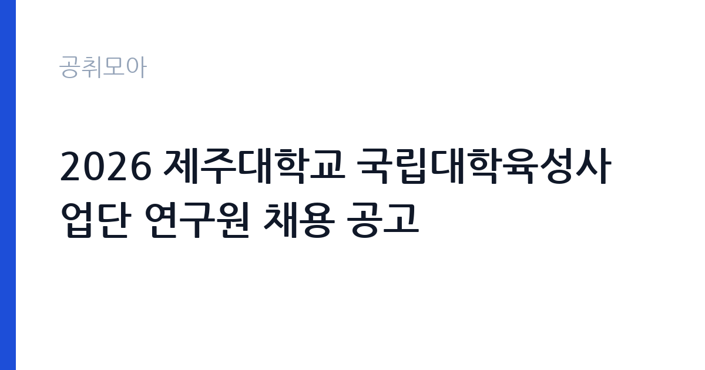

[국가기관] 2026 제주대학교 국립대학육성사업단 연구원 채용 공고
제주대학교 · 제주 · 마감 2026-10-26 (D-9) · 출처 나라일터

한눈에 보는 모집 조건
| 기관 | 제주대학교 |
|---|---|
| 공고명 | 2026 제주대학교 국립대학육성사업단 연구원 채용 공고 |
| 고용형태 | 정규직 |
| 근무지 | 제주 |
| 게시일 | 2026-10-16 |
| 마감일 | 2026-10-26 (D-9) |
지원자격, 이렇게 읽으세요
- 연구원 2명
- 접수 ~2026-10-26 마감
- 세부 조건은 원문 공고문 확인
국립대학육성사업 연구원은 사업 기획과 운영, 성과 관리 업무를 맡을 수 있는지를 봅니다. 공고문에 전공이나 경력의 세부 기준이 함께 제시되므로 원문을 대조해야 합니다. 계약직 연구원이므로 국가공무원법상 결격사유가 없어야 하고, 최종학력 증명서와 경력증명서를 제출해야 합니다. 전자우편 접수이므로 파일 형식과 용량 제한을 미리 확인하는 것이 안전합니다.
이 공고의 포인트
제주대학교는 제주 지역의 거점 국립대로, 국립대학육성사업을 통해 교육·연구 역량 강화와 지역 연계 과제를 함께 추진합니다. 감귤과 해양, 관광, 바이오 분야가 지역 산업의 축을 이루기 때문에 사업 과제에도 이 분야가 자주 등장합니다. 연구원 2명을 동시에 뽑는 공고라 업무 분장이 나뉘어 있고, 사업단 운영 전반을 경험할 수 있습니다.
전형은 어떻게 진행되나
서류전형으로 자격 요건과 사업 이해도를 확인하고 면접전형을 거쳐 최종합격자를 선발합니다. 접수 방식이 전자우편이라 서류 도착 시각이 곧 접수 시각이 됩니다. 서류전형 합격자는 개별 통지되며, 최종합격자 발표는 11월 5일로 공고에 명시되어 있습니다. 진행 상황에 따라 전형 일정이 변경될 수 있다고 안내되어 있으니 제주대 누리집 공지를 함께 확인하십시오.
원문에서 확인한 전형 방식
2026년 제주대학교 국립대학육성사업 연구원을 아래와 같이 공개 모집하오니, 역량있는 인재의 많은 지원 바랍니다. 1. 채용인원: 국립대학육성사업 연구원 2명 2. 원서접수 기간: 2026. 10. 16.(금) ~ 10. 26.(월) 18:00 3. 원서접수 방법: 응시자 제출서류를 E-mail로 제출(jejuplan@jejunu.ac.kr) 4. 최종합격자 발표: 2026. 11. 5. 문의처: 제주대학교 기획평가과(064-754-8213) 6. 기타사항 - 진행 상황에 따라 전형 일정 등은 변경될 수 있습니다. - 제출서류 등 자세한 내용은 공고문(첨부파일)을 참고하시기 바랍니다.
이런 분께 추천해요
- 대학 재정지원사업이나 지역 연계 사업을 운영해본 경력자
- 사업계획서와 실적보고서 작성에 익숙한 사무·연구 인력
- 제주 지역에서 근무하며 사업 기획 역량을 쌓으려는 지원자
지원 전 체크리스트
- 전자우편 접수 시 파일명과 용량 기준을 공고문에서 확인
- 마감이 오후 6시이므로 당일 오전 발송 권장
- 최종학력·경력 증명서를 미리 발급
- 사업단 업무 분장이 2명 중 어느 쪽인지 공고문에서 확인
모집 일정과 제출 타이밍
접수는 2026년 10월 16일부터 10월 26일 오후 6시까지입니다. 서류는 전자우편으로 제출하며, 마감 이후 도착분은 접수되지 않습니다. 서류전형과 면접전형을 거쳐 11월 5일 최종합격자가 발표됩니다. 임용 일정은 합격자 발표 후 개별 안내되며, 문의는 제주대학교 기획평가과로 하면 됩니다.
직무 이해하기: 국가기관
사업단 연구원의 업무는 계획과 실적을 문서로 남기는 일이 중심입니다. 연간 사업계획 수립, 과제별 예산 편성과 집행 점검, 성과지표 관리, 교육부 제출용 보고서 작성이 기본입니다. 사업 참여 학과와 부서에서 자료를 받아 취합하고, 사업 홍보와 성과 확산 자료를 만드는 일도 맡습니다. 제주대의 지역 연계 과제는 지역 기업·기관과의 협업이 많아 대외 소통 능력이 필요합니다.
자기소개서 작성 팁
자기소개서는 사업 관리 역량을 구체적 사례로 보여주는 데 집중하십시오. 예산 규모와 집행률을 관리한 경험, 성과지표를 정리해 보고서를 완성한 경험을 수치와 함께 적으면 설득력이 높습니다. 국립대학육성사업의 목적과 제주대의 지역 연계 방향을 한 문단으로 정리해 두면 직무 이해도가 드러납니다. 확인되지 않은 통계는 인용하지 않는 편이 안전합니다.
면접 준비 포인트
면접에서는 사업 운영의 실제 상황을 가정한 질문이 나옵니다. 예산 집행이 지연될 때 어떤 순서로 점검할지, 부서별 자료 취합이 늦어질 때 어떻게 조율할지 같은 판단을 묻습니다. 사업 성과를 어떤 지표로 증명할지에 대한 질문도 가능합니다. 제주 지역에서 장기 근무가 가능한지도 확인 대상이므로 거주 계획을 정리해 두십시오.
급여·근무조건 읽는 법
보수는 제주대학교 계약직원 보수 기준에 따라 책정되며, 공고문에 급여와 수당 항목이 제시됩니다. 구체적인 금액은 원문에서 확인하십시오. 국립대학육성사업 연구원은 사업 기간에 맞춰 계약이 정해지고, 근무실적에 따라 재계약이 검토됩니다. 세금과 4대보험을 공제한 금액이 실수령액이며, 초과근무 수당과 명절휴가비 등은 학교 규정을 따릅니다.
자주 묻는 질문
- 연구원 2명은 업무가 다른가요?
사업단 내 업무 분장에 따라 역할이 나뉩니다. 지원 시 어떤 업무를 희망하는지 공고문의 모집 분야를 확인하십시오. - 접수는 방문해도 되나요?
공고문은 전자우편 제출 방식을 안내하고 있습니다. 방문 접수 가능 여부는 기획평가과에 문의해 확인하십시오. - 계약 기간은 얼마인가요?
국립대학육성사업 수행 기간에 맞춰 정해지며, 세부 조건은 공고문에 기재되어 있습니다.
함께 보면 좋은 공고
[국가기관] [국립군산대학교]국립대학육성사업 기간제 계약직원(연구원) 채용 재공고 — 마감 2026-10-26[국가기관] 임상연구과 제5차 전문연구원(다급 1명) 채용공고 — 마감 2026-10-25[국가기관] 2026년도 제1회 화성동탄우체국 공무직 우정실무원 채용시험 서류전형 결과 및 실기/면접시험 공고 — 마감 2026-10-20출처: 나라일터 공개정보를 바탕으로 공취모아가 정리한 안내글입니다. 모집 조건·일정은 변경될 수 있으니 지원 전 반드시 원문 공고문을 확인하세요. 본 글은 정보 제공용이며 합격을 보장하지 않습니다.